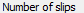
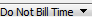
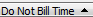

from sikuli import * import logging import myTools import names_Init import backup_Data #---------------------------------------------------# def Open_SlipList(): #---------------------------------------------------# # open slip list and verify it's open myTools.getFocus() type("m",KeyModifier.CTRL) time.sleep(1) click() #---------------------------------------------------# def Open_LastSlip(): #---------------------------------------------------# # go to the end of the list and open the slip so we can copy dates. type(Key.END) type(Key.ENTER) time.sleep(1) #---------------------------------------------------# def Close_SlipUI(): #---------------------------------------------------# logging.debug('- close slip entry; close slip list') type(Key.F4,KeyModifier.CTRL) time.sleep(1) type(Key.F4,KeyModifier.CTRL) time.sleep(1) #---------------------------------------------------# def Create_OneSlip(slipType,tk,act,cli,slipnum): #---------------------------------------------------# logging.debug('- Create_OneSlip: ' + str(slipnum)) type("n",KeyModifier.CTRL) time.sleep(1) # slip type type(slipType) # timekeeper type(Key.TAB) type(tk) # activity type(Key.TAB) type("2",KeyModifier.CTRL + KeyModifier.SHIFT) time.sleep(1) type(act) # client type(Key.TAB) time.sleep(1) type(cli) time.sleep(1) # reference type(Key.TAB) # use down arrow for ref; skip every 8th one type(Key.HOME) for ref in range(slipnum % 8): type(Key.DOWN) time.sleep(1) # extra type(Key.TAB) type("Slip: ") type(slipType) type(str(slipnum)) time.sleep(1) # description type(Key.TAB) # start date for the first slip is 1/1/2013 type(Key.TAB) if slipnum == 1: slipDate = "1/1/" + Settings.dataYear type(slipDate) # increment the date every 8th slip. elif (slipnum - 1) % 8 == 0: type("+") # every 25th slip, tab to Hold and mark it # note: no slip with Hold will also be recurring (see next if) if slipnum % 25 == 0: myTools.pressTAB(6) time.sleep(1) type(Key.SPACE) # recur the slips 6 ,7, 9, 10; one slip of each bill status type # also add one hour DoNotBill time # note: no slip with Recur will also be on Hold (see previous if) # the slipType check below is so bill arrangement scripts don't run this part if slipType == "t" and slipnum in (6, 7, 9, 10): myTools.pressTAB(7) time.sleep(1) type(Key.SPACE) click() myTools.pressTAB(7) time.sleep(1) type("1") click() type("s",KeyModifier.CTRL) time.sleep(1) #---------------------------------------------------# def Create_Slips(tmslips,exslips): #---------------------------------------------------# clients = names_Init.fInit_Clients() timekeepers = names_Init.fInit_Timekeepers() tasks = names_Init.fInit_Tasks() expenses = names_Init.fInit_Expensess() count = 0 Open_SlipList() for slip in range(tmslips): Create_OneSlip("t",timekeepers[count%len(timekeepers)],tasks[count%len(tasks)],clients[count%len(clients)],count+1) count += 1 Close_SlipUI() Open_SlipList() Open_LastSlip() for slip in range(exslips): Create_OneSlip("e",timekeepers[count%len(timekeepers)],expenses[count%len(expenses)],clients[count%len(clients)],count+1) count += 1 Close_SlipUI() Open_SlipList() Open_LastSlip() for slip in range(tmslips): Create_OneSlip("t",timekeepers[count%len(timekeepers)],tasks[count%len(tasks)],clients[count%len(clients)],count+1) count += 1 Close_SlipUI() Open_SlipList() Open_LastSlip() for slip in range(exslips): Create_OneSlip("e",timekeepers[count%len(timekeepers)],expenses[count%len(expenses)],clients[count%len(clients)],count+1) count += 1 Close_SlipUI() #---------------------------------------------------# backup_Data.Backup_Checkpoint("slips")